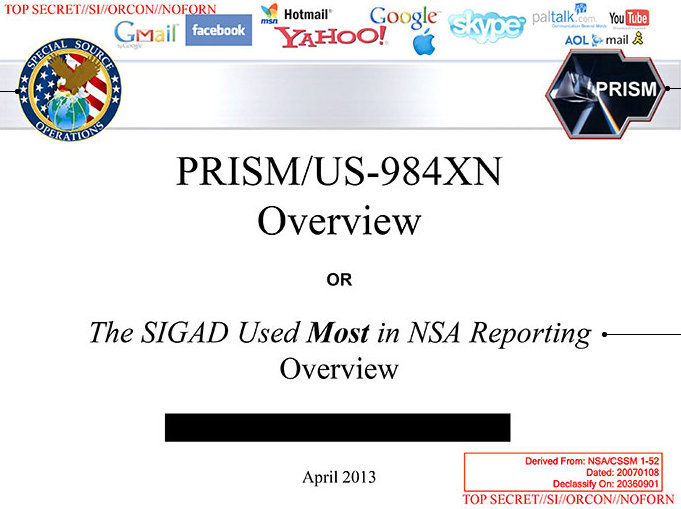
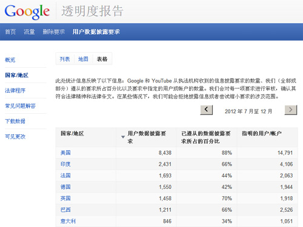

老杨作品midphoto.com
老杨谈棱镜、谷歌、周小平和斯诺登
长沙杨飞
谷歌是一家商业公司，但它也不完全是金钱至上，它有一条著名的“不作恶”原则，源自该公司两位联合创始人佩奇和布林在2004年首次公开募股时发表的一封信，后来被称为《不作恶宣言》：
“不要作恶。我们坚信，作为一个为世界做好事的公司，即使我们放弃一些短期收益，但从长远来看，我们会得到更好的回馈。”（原文是：Don't be evil. We
believe strongly that in the long term, we will be better served — by a company
that does good things for the world even if we forgo some short term gains）
谷歌2010年初决定放弃在中国的业务，损失每年几十亿的收入，并且在今后很长一段时间都无法重返中国市场（只要中国现政府还在台），部分应该源自其“不作恶”的公司文化。
谷歌的不作恶原则多年来被各方称赞，2010年初与中国政府公开翻脸更是被很多西方媒体赞扬。然而2013年6月，一个名叫斯诺登（Edward
Snowden）的29岁美国程序员差点让谷歌等多家著名公司阴沟里翻船。
根据斯诺登提供的情报，2013年6月6日，英国《卫报》曝光了美国国家安全局（NSA，National Security
Agency）一个代号为“棱镜（PRISM）”的监视项目。《卫报》文章的标题是：美国国家安全局棱镜项目监控谷歌、苹果等公司的用户数据（NSA Prism
program taps in to user data of Apple, Google and
others）。第二天，美国《华盛顿邮报》也刊登了爆料文章，标题是U.S., British intelligence mining data from
nine U.S. Internet companies in broad secret program）。

英国卫报图片：棱镜项目代号“US-984XN”
斯诺登此人高中未曾毕业，服过短期兵役，后来为多家美国情报机构工作。他提供的机密文件表明，数百家美国公司参与了棱镜项目，其中包括谷歌、雅虎、微软和苹果等知名公司。通过该项目，美国国家安全局（NSA）可以直接访问这些公司的服务器，获取用户数据，分析音频、视频、照片、电邮、文件和连接日志等信息，跟踪用户的一举一动。
棱镜项目不但跟踪普通人的电话和网络信息，还跟踪著名人物，包括外国领导人，比如德国总理默克尔和法国总统萨科齐。欧盟各国领导人大发雷霆，指责美国人背信弃义，连盟友都不放过。一个小小程序员让美国陷入了一场外交危机。
棱镜项目的前身是小布什总统在911事件后批准的恐怖分子监听计划（Terrorist Surveillance
Program），奥巴马总统将其发扬光大。棱镜项目正式开始于2007年，参加该项目的大公司和加入时间如下：微软（2007年）、雅虎（2008年）、谷歌（2009年）、Facebook（2009年）、Paltalk（2009年）、YouTube（2010年）、Skype（2011年）、美国在线（2011年）以及苹果公司（2012年）。值得注意的是，著名的社交网络推特Twitter不在此列。
面对铺天盖地的指责，2013年6月9日，美国总统奥巴马发表讲话辩护说：“你不能在拥有100%安全的情况下还拥有100%隐私和100%便利。”奥巴马说得不错，但他没法举证棱镜计划到底帮美国抓到了多少恐怖子。美国人民失去了隐私，但是按美国现在的情况，反恐形势依然严峻。
斯诺登到底是叛徒还是英雄，这个问题见仁见智。如果你认为个人隐私重要，那他就是英雄。如果你认为反恐重要，那他就是叛徒（泄露了国家机密）。
棱镜曝光的反响这么大，我个人觉得很惊讶。美国监视德国和中国，中国和法国也在监视美国，世界大国都在互相监听，此事自古如此。这点事还互相指责，某些政客显得太矫情。情报机构对个人和公司进行监视，这本来就是他们的工作。
我个人觉得斯诺登最大的功劳并不是曝光了情报机构的工作，而是揭露了美国法律体系的一个秘密，那就是外国情报监视法庭（Foreign Intelligence
Surveillance Court，简称FISC）。
FISC其实也不算秘密，至少在表面上它是公开以及合法的。1978年，美国国会通过了《外国情报监视法》，FISC正是根据这个法律而成立的。该法案要求美国情报机构实施监控之前，必须先向FISC提交申请。但实际执行的情况是，从1979年到2004年，FISC批准了18761次监控授权，只拒绝了5次。FISC实际上变成了一个橡皮图章，美国情报机构几乎可以为所欲为，想监听谁就监听谁。尤其要指出的是，FISC是独立运行的，美国最高法院管不了它。这简直就是法外之法。
意料之中的，被斯诺登点名的各大网络公司都说自己冤枉。雅虎公司发表文告说，雅虎本来不想与美国政府合作，但是美国情报机构采取威胁手段，说若不合作将被FISC判罚，罚款可能高达每天25万美元。雅虎后来只得服从。谷歌公司首席法律顾问德拉蒙德也立马发表了一封致联邦调查局和美国司法部的公开信，强调没有任何政府部门能直接访问谷歌的服务器，而且它与美国政府合作是按照法律程序进行的。
谷歌的声明原文是，“政府需要通过司法程序（如传票、法院命令或搜查令）才能迫使 Google
披露用户信息。虽然在某些紧急情况下可以采取例外措施，但即使如此，政府也无法迫使 Google披露信息。”换句话说，美国的执法机构并不是打个电话就能从
Google 得到相关数据，而是必须走司法程序，并且谷歌也不是每次都执行。
谷歌的2012年《透明度报告》列举了各国政府的请求次数以及谷歌最终执行的比例。美国政府2012年下半年共向谷歌提出了8438次数据要求，涉及账户14791个，88%的要求被执行了，无论是请求数和执行情况都排名第一。而中国政府的请求数为0。这是当然的，谷歌和中国政府早就翻脸了。在中国，中宣部的网络审查令必须100%执行，否则就请你走人。

谷歌透明度报告截图
尽管如此，还是有不少中国愤怒青年上网骂谷歌，说谷歌公司高调拒绝与中国政府合作，但它转身就与美国政府合作，执行双重标准，又当婊子又立牌坊。著名网络作家周小平就是其代表人物，他刚发表了一篇名为《请不要辜负了今天这一切》的文章，谈到了谷歌，这里摘抄如下：
“再没有任何国家比今天的中国蒙受的不白之冤更多了。如今中国的网上大部分声音都是在恶骂中国，却还说中国舆论不自由，美国才自由。可是你难道不知道斯诺登因为在网上曝光美国通过google监控全球用户的消息就被通缉了吗？你难道不知道维基网的阿桑奇因为曝光了一些美国的内幕消息就也通缉了吗？你是否还记得当年google公司在中国到处宣传自己“用不作恶”时，那些信以为真的天真糊涂蛋们表现出来的激动劲儿？可现实是根据解密资料显示：google不仅纵容卖假药的诈骗信息泛滥，而且还安装有后门程度监控中国网民的网络账户密码以及信用卡信息。”
周小平这段文字相当雷人。谷歌卖假药，这从何说起？要说卖假药，地球上的网络公司有谁比得过百度？周作家对谷歌撤出中国事件缺乏基本的了解。前文我们已经花了一万多字分析，谷歌和中国政府翻脸主要是因为互联网审查等问题无法达成一致，包括网站屏蔽、搜索过滤以及敏感词审查等等。而谷歌与美国政府合作主要是提供用户数据以供反恐之用，这完全是两个不同的问题。假如谷歌屏蔽了与美国政府立场不一致的纪录片，比如《华氏911》；又或者谷歌屏蔽了美国总统或参议员的丑闻，就像中国政府屏蔽令计划+法拉利那样的，才能证明谷歌当婊子又立牌坊。棱镜计划的内容显然不能证明这一点。
实际上，以反恐为由，中国政府对个人隐私的侵犯比美国政府还要厉害。中国2015年12月通过的《反恐怖主义法》第十八条原文如下：“电信业务经营者、互联网服务提供者应当为公安机关、国家安全机关依法进行防范、调查恐怖活动提供技术接口和解密等技术支持和协助。”
很多人没有意识到这一条的重大意义，它实际上直接授权公安机关以反恐的名义进入任何电信和网络公司的主机，而且不需经过法庭的批准。美国政府好歹还有FISC特别法庭这块遮羞布，而中国政府则是直接裸体上场。也许有人要说，中国公安几十年来不都是这么做的吗？确实是这样。但现在强调依法治国，所以就专门制订了《反恐怖主义法》，依法办事。你说这是好事还是坏事？
杨飞，
2016/2/3，长沙
本文节选自杨飞作品《为什么我们不能访问谷歌》
返回网站首页
关注老杨
杨飞作品集：www.midphoto.com
微信：yangfei789288
微信公众号：老杨书吧
新浪微博@长沙杨飞
推特Twitter@feiyang17
Facebook：yangfei999999@hotmail.com